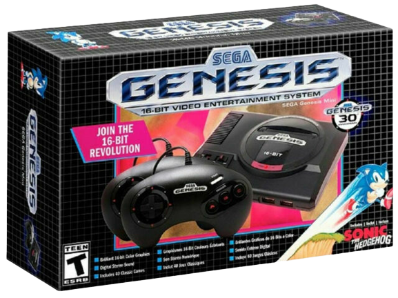

Retro Games News
It's recently been announced that the Sega Genesis Mini 2 will only get a limited release in North America when it's released in October, which will no doubt be disappointing for fans of the first Mini console. While the Mini is quite affordable comparatively speaking, game collecting has grown progressively pricier in recent years, particularly for those who favor rarer consoles like the Sega Saturn. Sega's second-to-last system was a major disappointment and sold poorly, meaning that the console and most of its must-have games are quite expensive today.
While retro video game prices fluctuate often, Sega Saturn software isn't likely to see a drastic reduction in price any time soon. That said, the Saturn had a few seriously stellar titles that never received any ports or remasters on other systems.

Mortal Kombat Trilogy $150-$250Released in 1997, Mortal Kombat Trilogy was a celebration of the infamous series that had earned the ire of parents and politicians the world over earlier in the decade. Yet, while the Sega Saturn compilation would make for a great conversation piece among fighting game collectors, the somewhat slow-paced fights and considerable balance changes made for a somewhat wonky release. Still, the series remains a staple of both the genre and era, and die-hard Mortal Kombat fanatics certainly wouldn't mind owning this port. Unfortunately, a loose copy goes for about $150, and the title is considerably cheaper on other platforms.
In May 2001 Sega put out a press release confirming that seven games were in development for the GameCube and the first three of these would be Super Monkey Ball, Virtua Striker 3 Ver. 2002 and Phantasy Star Online. Super Monkey Ball had started life as a popular arcade game in Japan with a console port ready in time for the launch of the GameCube. It was a big hit and gamers, who just six months prior were writing Sega off, were excitedly buying copies of the party game along with their sparkly new 'Cubes in late 2001.

With its interesting mix of physics-based gameplay and manic multiplayer action, Sega had found a new audience almost overnight. Super Monkey Ball fits neatly into the family-friendly, loveable characters, and accessible gameplay that Nintendo is known for. Super Monkey Ball was received well by gamers and critics and put Sega and Nintendo’s partnership in the spotlight. The series would stay a Nintendo exclusive until 2005 and is now up there with Sega’s most fondly-remembered franchises. Had Super Monkey Ball failed, it may have meant the end of Sega but heading into 2002 there was a lot more to come. The company would also look to traditional action-adventure titles to bring its software style to GameCube. One example, Spartan: Total Warrior, took classic melee combat and added a dose of strategy to deepen the gameplay. Others, such as the excellent Samurai Jack: The Shadow of Acu, fitted neatly into the console’s range of cartoon-inspired family games. While Sega would still develop arcade games during GameCube’s life, these releases show how quickly it was evolving to develop deeper, story-driven titles that gamers were starting to look for at the time.